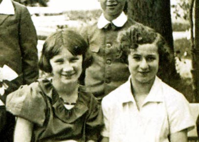
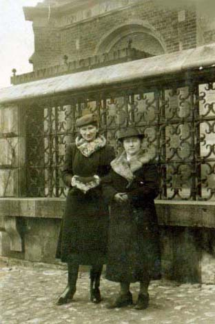
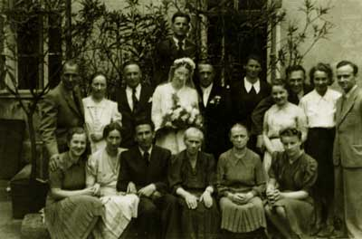
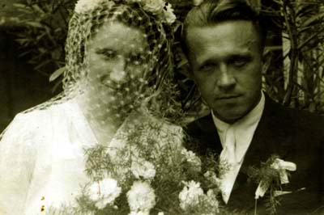

Krystyna Sawicka
Krystyna z kuzynką Haliną.
Krystyna z ciotką Stefanią, Kraków.
Ślub Krystyny i Władysława w Krakowie
Krystyna Sawicka urodziła się 10.06.1919 roku w Grabkach Dużych koło Staszowa. W tamtejszym dworze jej ojciec był gorzelnikiem.
W latach 40. ukończyła gimnazjum w Kielcach, a następnie wraz z rodzicami znalazła się w Dobrodzieniu, gdzie po wojnie pracował Antoni. Tam też ojciec zaprzyjaźnił się z nauczycielem matematyki w szkole średniej, Tomasikiem, pochodzącym z okolic Tuczęp. Byli zatem krajanami, co ich dodatkowo zbliżyło. Tomasik miał stryjecznego brata, zdolnego Władka, uczącego się na wydziale medycznym. Nic nie szkodziło, by wyswatać córkę Krystynę z dobrze rokującym młodzieńcem
Władysław Tomasik urodził się 11.10.1911 roku w Michałowie koło Pińczowa, ale po studiach podjął pracę w Częstochowie.
Krystyna była mocno związana ze swoją krakowską rodziną. Mieszkały tam wtedy siostry ojca z rodzinami. Miały solidne źródło dochodu - ich piekarnie świetnie prosperowały. Wiodły życie mieszczańskie, stateczne i wygodne, co mogło podobać się Krystynie nawykłej do ciągłych przeprowadzek. Nic zatem dziwnego, że często krakowskie ciotki odwiedzała. A kiedy wyznaczono datę ślubu, było jasne, że ceremonia odbędzie się właśnie w Krakowie u krewnych.
Była to impreza, o jakiej długo się potem w rodzinie opowiadało, bo nie tylko spotkali się tam dawno nie widziani krewni, ale i ciotki postarały się o wykwintne menu. Oczywiście należy tu dodać, iż panie Sawickie z domu nie były zbyt rozrzutne, a nawet wprot przeciwnie, ale bratanicy nie żałowały grosza na ślub.
Po ślubie młodzi zamieszkali w Częstochowie, gdzie Władysław zdobywał specjalizacje, a w krótce okazał się znanym ginekologiem. Przez lata był później ordynatorem Oddziału Ginekologii w szpitalu przy uilcy Kordeckiego w Częstochowie.
Zofia i Władysław wiedli dostanie życie, niczego sobie nie odmawiali, a ich mieszkanie ozdabiały nie tylko antyczne meble, ale i obrazy wybitnych polskich malarzy.

Krystyna i Władysław
Z czasem kupili też dom w Zakopanem, gdzie chętnie wypoczywali, i gdzie spędzili ostatnie lata życia. Tam też zmarł Władysław, w grudniu 1990 roku. Krystyna zmarła 29.08.2007 roku i została pochowana w Krakowie na Cmenatrzu Rakowickim.